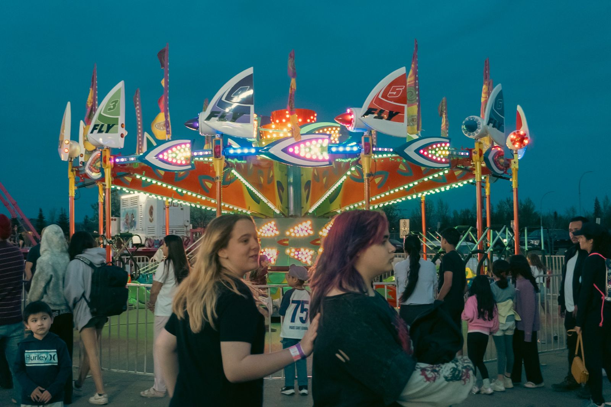
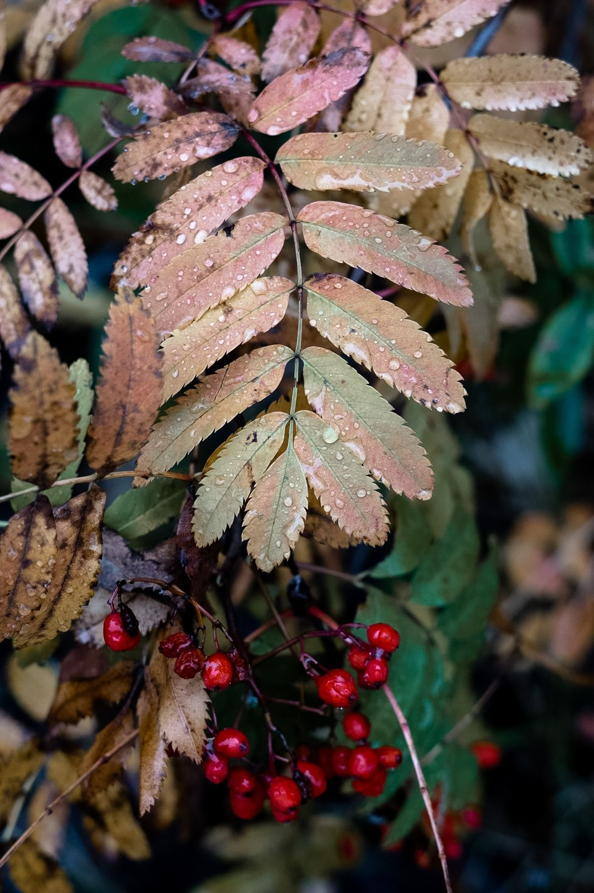
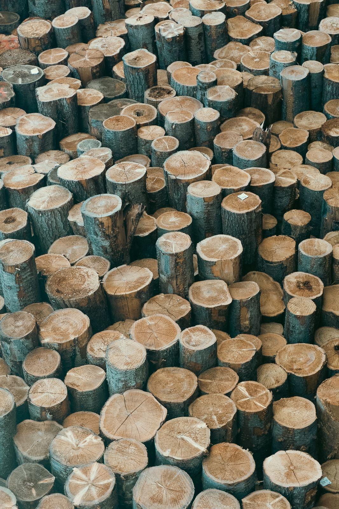
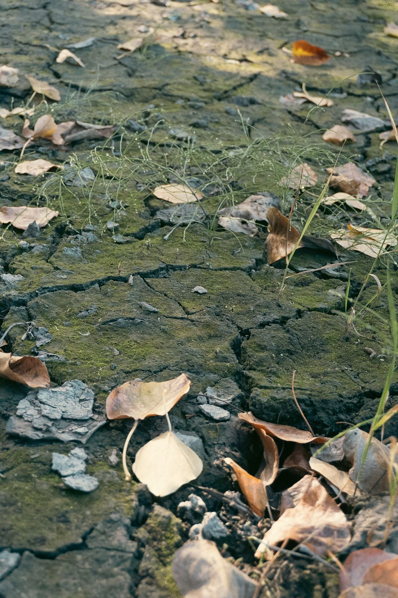
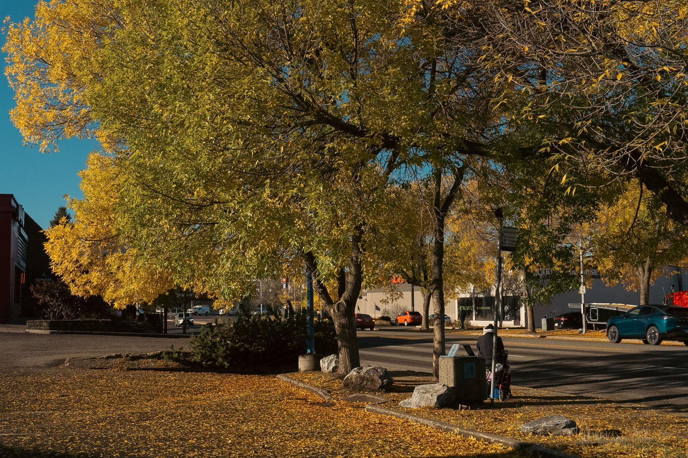
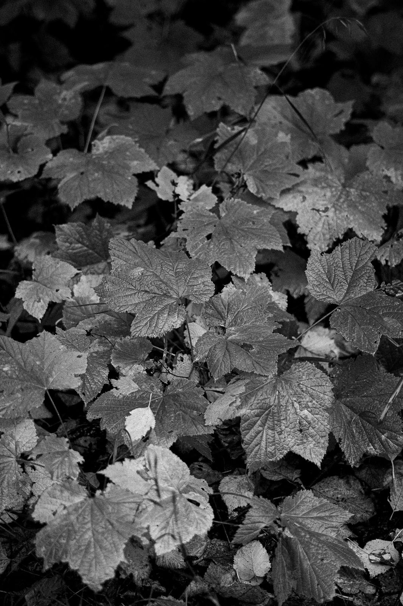
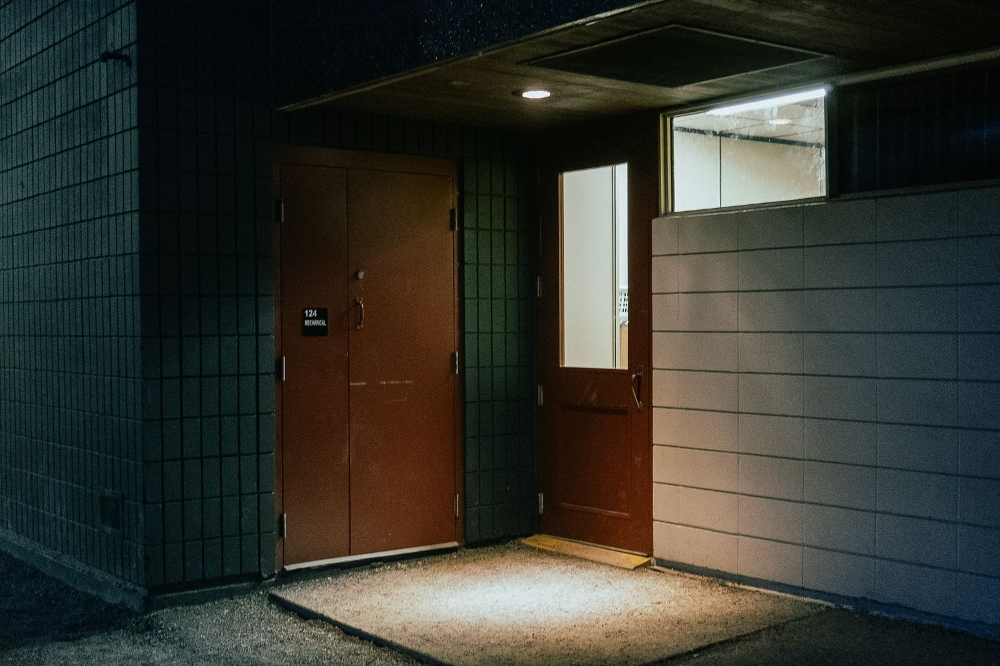

What fills the rest of my week: shooting film, getting outside, and having people over.







Lakes, mountains and road trips around BC and Alberta. Always with a camera.
Backyard get-togethers, garden parties, and any excuse to bring people together.
Lifting about four days a week, and growing things in the backyard the rest of the time.
Lana Del Rey, always.
Builder and explorer. I build with the landscape, not over it.
GTA and Cyberpunk 2077.
That fender curve on the 1980 Corvette.